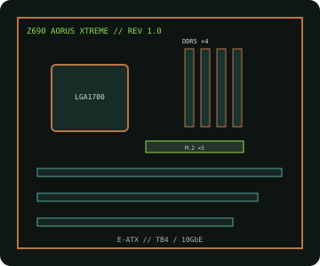

[ INDIVIDUAL COMPONENT // MOTHERBOARDS ]
GIGABYTE Z690 AORUS XTREME (rev. 1.0)
E-ATX Z690 flagship for LGA1700 desktop CPUs, with DDR5, PCIe 5.0, expanded M.2, Wi-Fi 6E, 10GbE and Thunderbolt 4.

IDENTIFICATION: Exact model/revision is Z690 AORUS XTREME rev. 1.0. Match the PCB revision before selecting BIOS, CPU or accessories.
Specifications
| Exact board / revision | GIGABYTE Z690 AORUS XTREME, rev. 1.0 |
|---|---|
| Socket / chipset / CPU | LGA1700, Intel Z690 Express; 12th Gen Intel Core, plus supported 13th/14th Gen models when the rev. 1.0 CPU list and BIOS qualify them. |
| Form factor | E-ATX, approximately 305 × 285 mm; confirm chassis support and cable clearance. |
| Memory | Four dual-channel DDR5 DIMMs, up to 256 GB listed capacity; XMP and memory frequency are limited by processor, firmware and QVL. |
| PCI Express | Three full-length expansion slots; primary CPU slot is PCIe 5.0 x16 or x8/x8 with a second CPU slot. See rev. 1.0 manual for lane sharing and secondary slot bandwidth. |
| Storage | Four PCIe 4.0 x4 M.2 sockets and four SATA 6 Gb/s ports. PCIe generation, CPU/chipset routing and shared ports are socket-specific; M.2 sockets are not PCIe 5.0. |
| Networking / I/O | 10GbE and 2.5GbE Ethernet, Wi-Fi 6E/BT, dual Thunderbolt 4 USB-C and USB 3.2 ports. |
| BIOS / compatibility | Use the exact rev. 1.0 BIOS and CPU support list; check minimum version for any 13th/14th Gen CPU and memory QVL for DDR5 capacity/rate. |
Compatibility and service notes
Confirm processor model and minimum BIOS against GIGABYTE's revision-specific list. DDR5 is required; DDR4 modules are physically incompatible. Check lane sharing, M.2/SATA conflicts and E-ATX chassis dimensions before fitting add-in cards and drives.
Record board revision and firmware identifier. Follow ESD and power-disconnection procedures; cross-flashing a related Xtreme model can render the board inoperable.
Manufacturer sources
- GIGABYTE — Z690 AORUS XTREME rev. 1.0 specificationsOfficial product details and manual.
- GIGABYTE — rev. 1.0 CPU support, BIOS and QVLOfficial firmware and compatibility files for this PCB revision.